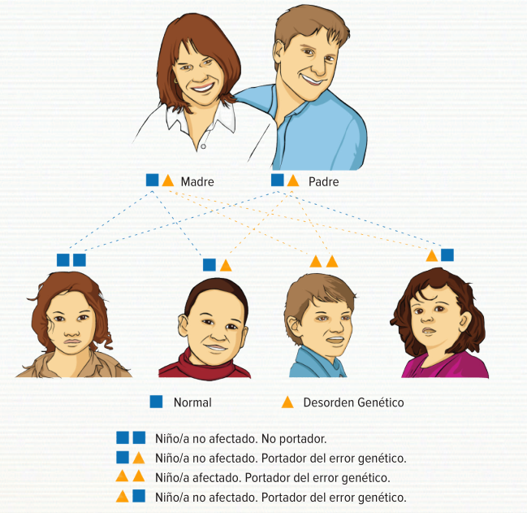

Los alimentos que contienen proteínas son los huevos, la leche, el pescado, la carne, el queso, el pan, etc.
Durante la digestión, la proteína se descompone en moléculas más pequeñas o “bloques de construcción” para ser transportadas por la sangre y se utilizan para el crecimiento y reparación de los tejidos.
Lo que empezó como un filete o un vaso de leche ahora se ha degradado en 20 “bloques de construcción” individuales conocidos como aminoácidos.
Estos aminoácidos viajan en el torrente sanguíneo y se suministran a las células donde se necesitan. Uno de estos aminoáScidos se llama metionina.
Si hay más metionina que la que el cuerpo necesita, la metionina extra se descompone. La homocisteína se forma durante la ruptura de la metionina.
La ruptura de la metionina es algo complicado. La homocisteína se forma durante la degradación de la metionina; posteriormente se puede romper aún más en una sustancia inofensiva llamada cistationina o se recicla de nuevo a metionina. Las enzimas son compuestos que hacen que las reacciones químicas ocurran en nuestro cuerpo. La conversión de homo- cisteina a cistationina requiere una enzima llamada de cistationina beta-sintasa (CBS). Para trabajar de manera eficiente, esta enzima requiere la vitamina B6 (piridoxina). Si la enzima CBS no está funcionando de manera eficiente, habrá una acumulación de homocisteína que causa problemas de salud y conduce a la enfermedad llamada homocistinuria.
“Homocistinuria“ significa la presencia de homocistina en la orina, que se produce cuando los niveles de homocisteína en la sangre están elevados.
Hay varios tipos diferentes de homocistinuria causadas por diferentes defectos en el metabolismo de la metionina.
La homocistinuria clásica se refiere al tipo en el que la enzima CBS (cistationina beta-sintasa) no está funcionando adecuadamente.
Los síntomas pueden variar de persona a persona y pueden ocurrir en diferentes edades.
Los bebés que nacen con homocistinuria generalmente parecen normales al nacer. En varios países,la homocistinuria se puede detectar en el programa de cribado neonatal a partir de la sangre impregnada en papel del recién nacido.
La homocistinuria causa una amplia gama de síntomas que pueden comenzar a desarrollarse progresivamente desde que tiene pocos meses de edad.
Los síntomas más comunes afectan principalmente a cuatro sistemas del cuerpo: el ojo, el cerebro, los huesos y el sistema vascular (vasos sanguíneos).
Los síntomas oculares más comunes incluyen miopía severa, luxación del cristalino (ectopia del cristalino) y glaucoma. Los síntomas oculares son a menudo los primeros signos de la enfermedad y pueden hacer sospechar la enfermedad y diagnosticarla.
La homocistinuria también puede causar retraso en el desarrollo y dificultades de aprendizaje y en los pacientes de edad avanzada y no tratados se han reportado problemas psiquiátricos.
Los niveles muy altos de homocisteína aumentan la tendencia de la sangre a coagularse y por lo tanto, incluso las personas jóvenes con homocistinuria pueden desarrollar aterosclerosis o trombosis que puede presentarse como derrames cerebrales, ataques cardíacos y trombosis venosa.
También hay algunos efectos esqueléticos tal como se ha observado que los pacientes no tratados son a menudo más altos que la media y tienen brazos y piernas largas. La osteoporosis temprana también puede ser vista en los hombres y mujeres afectadas.
Es importante tener en cuenta que el tratamiento temprano puede evitar que muchos de estos síntomas se produzcan o prevenir el empeoramiento de los síntomas que pueden estar presentes en el momento del diagnóstico.
Los pacientes con homocistinuria pueden desarrollar una amplia gama de síntomas y no todos los pacientes desarrollan los mismos síntomas.
La edad de diagnóstico inicial de la homocistinuria y la severidad de la enfermedad determinarán
los diferentes objetivos de tratamiento.
Para los recién nacidos diagnosticados de homocistinuria, el objetivo es prevenir el desarrollo
de síntomas y asegurar el desarrollo de un crecimiento normal y de la inteligencia.
Cuando el diagnóstico se hace tardíamente con más edad y ya se han desarrollado algunos sín-
tomas, el objetivo es evitar complicaciones mayores, tales como eventos tromboembólicos (como
accidentes cerebrovasculares o ataques al corazón) y prevenir el empeoramiento de los síntomas
que ya están presentes.
Para lograr estos objetivos clínicos, todas las opciones terapéuticas están dirigidas a reducir los
niveles de homocisteína en la sangre.
El tipo de tratamiento para la homocistinuria depende en gran medida de si los niveles de homo-
cisteína de la persona afectada responden al tratamiento con piridoxina (vitamina B6) y la homo-
cistinuria se puede clasificar en dos tipos:
La homocistinuria clásica es una enfermedad genética. Esto significa que se transmite a través de los genes y no es provocada por cualquier cosa que pueda haber ocurrido durante el emba- razo. Los trastornos genéticos se heredan y hay diferentes patrones de herencia. El patrón de herencia para la homocistinuria se denomina autosómica recesiva, lo que significa que un de- fecto genético se hereda de cada padre. En otras palabras, ambos padres son portadores de homocistinuria. Las personas que portan un gen CBS normal y un gen CBS mutado (homocistinuria) se llaman “portadores”. Los portadores están bien clínicamente y, normalmente, no tienen ningún síntoma de la enfermedad. Cuando ambos padres son portadores, tienen una probabilidad de 1 en 4 (25%) en cada embarazo de que el niño nacido tendrá homocistinuria. También hay una probabilidad de 1 en 2 (50%) de que el bebé es portador de la enfermedad, como los padres, y 1 en 4 (25%) de probabilidades de que el bebé ha heredado los dos genes normales de CBS. El diagrama muestra cómo sucede esto: 
Se ha demostrado que los pacientes diagnosticados por cribado neonatal o muy temprano en la infancia y que recibieron tratamiento precoz, tienen un buen control bioquímico y pueden vivir y disfrutar de una vida normal. Para aquellos que ya mostraron algún síntoma en el momento del diagnóstico, el tratamiento empleado con un buen control bioquímico ha demostrado que detiene la evolución de los sínto- mas y permite mejorar la calidad de vida. En caso de necesitar asistencia adicional con el cumplimiento de su tratamiento, debes buscar ayuda de tu médico.